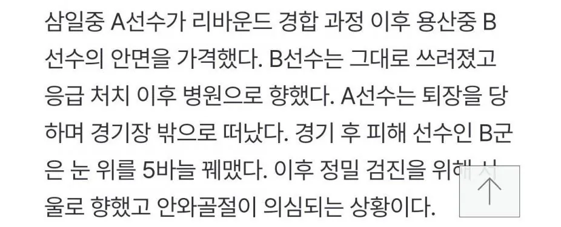

중학교 농구 대회 폭력 사건으로 중징계를 받은 가해 학생이 최근 농구협회 스포츠공정위원회 재심에서 1년 6개월로 감경받은 것으로 확인됐습니다.
폭력 행위를 크게 반성하고 뉘우치고 있다는 점과 소속 학교 교사 등의 탄원서 등을 고려해 이같이 결정한 것으로 전해졌습니다.
또 3년 6개월의 징계가 그대로 확정될 경우, 가해 학생의 엘리트 농구 선수로서의 경력이 사실상 끝나게 된다는 점을 고려한 것으로 알려졌습니다.
하지만, 피해 학생 측은 이같은 재심의 결과를 전해 듣고 받아들이기 어렵다는 입장을 전했습니다.
피해자만 병신 됨ㅋㅋㅋㅋㅋㅋㅋ
https://news.kbs.co.kr/news/pc/view/view.do?ncd=8385517
한국의 사법부는 오늘도 아름답군